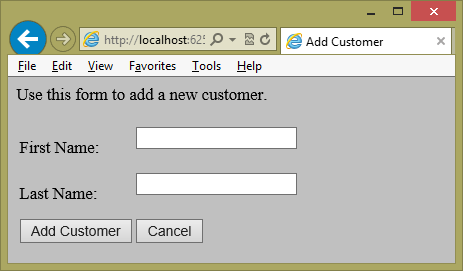
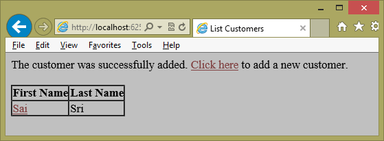

Design Patterns - MVP - Model View Presenter Pattern-Part 1
2. .NET Application Designers
3. .NET Application Developers
2. Basic understanding of ASP.NET Web Application.
2. Using VS Test, NUnit, MBUnit etc to test business logic layer, but still some defects are exists in the application as business logic involved in presentation layer.
3. Used Presentation Layer, Business Logic Layer, Data Access Layer in the application but still some times need to write redundant code in presentation layer to consume or call other modules or other use cases.
4. Integration defects are getting injected when we make some changes in integrated modules.
5. Defect fixing and enhancements are taking more time to analyze the presentation tier logic and its integration dependencies and causing for opening new defects.
A user can modify the data and submit the changes.
The page retrieves the domain data, handles user events, alters other controls on the page in response to the events, and submits the changed domain data.
Including the code that performs these functions in the Web page makes the class complex, difficult to maintain, and hard to test.
2. Enable loose coupling while developing modules or any use cases.
4. Share code between pages that require the same behavior.
5. Separate the responsibilities for the visual display and the event handling behavior into different classes named, respectively, the view and the presenter or controller or ViewModel.
2. Test driven approach - maximize the code that can be tested with automation
MVP (Model View Presenter) or (Model Passive View, Supervisor Controller)
MVVM (Model View ViewModel)
Yes
2. Controller, Presenter, and ViewModel purpose is same in all the above 3 patterns?
Yes
3. Communication and flow of Model, View with Controller, Presenter, and ViewModel is same?
No, that is the reason these 3 patterns exists.
4. Are these patterns replacement of PL (Presentation Layer), BLL (Business Logic Layer) and DAL (Data Access Layer)
No, these patterns are for separating the UI and UI Logic from Presentation Logic
and enables the loose coupling.
2. Complex UI Design
2. Disconnected Model (View separation from all other layers)
2. Connected Model
How to Implement MVP?
1. The View class (the Web page or user control) manages the controls on the page and it forwards user events to a presenter class and expose properties that allow the presenter to manipulate the view’s state.
2. The Presenter contains the logic to handle and respond to the events, update the model (business logic and data of the application) and, in turn, manipulate the state of the view.
One of my client's application architecture:
I will explain soon, how we implented and what components we have used.


Implementing a View Class:
The view (a web page, a user control, or a master page) contains user interface elements.
The view should forward user events to the presenter and expose properties or methods for the presenter to manipulate the view’s state.
How View Updates?
When the model is updated, the view also has to be updated to reflect the changes. View updates can be handled in several ways. The Model-View-Presenter variants, Passive View and Supervising Controller, specify different approaches to implementing view updates.
In Passive View, the interaction with the model is handled exclusively by the presenter; the view is not aware of changes in the model. The presenter updates the view to reflect changes in the model.
In Supervising Controller, the view interacts directly with the model to perform simple data-binding that can be defined declaratively, without presenter intervention.
The presenter updates the model; it manipulates the state of the view only in cases where complex UI logic that cannot be specified declaratively is required.
Examples of complex UI logic might include changing the color of a control or dynamically hiding/showing controls.
When to use Passive View or Supervising Controller
If testability is a primary concern in our application, Passive View might be more suitable because we can test all the UI logic by testing the presenter.
If we prefer code simplicity over full testability, Supervising Controller might be a better option because, for simple UI changes, we do not have to include code in the presenter that updates the view.
Passive View usually provides a larger testing surface than Supervising Controller because all the view update logic is placed in the presenter.
Supervising Controller typically requires less code than Passive View because the presenter does not perform simple view updates.
If we are using the Supervising Controller variant, the view should also perform direct data binding to the model (for example, using
the ASP.NET built-in ObjectDataSource control).
In cases where the presenter exclusively handles the interaction with the model, the ObjectContainerDataSource Control will help in implementing data binding through the presenter.
The ObjectContainerDataSource control was designed to facilitate data binding in a Model-View-Presenter scenario, where the view does not have direct interaction with the model.
View Interaction with the Presenter
There are several ways that the view can forward user gestures to the presenter.
1. The view directly invokes the presenter’s methods.
This approach requires, implement additional methods in the presenter and couples the view with a particular presenter.
2. Having the view raise events when user actions occur.
This approach requires code in the view to raise events and code in the presenter to subscribe to the view events.
The benefit to the second approach is that there is less coupling between the view and the presenter than with the first approach.
View Interaction with the Model
We can implement the interaction with the model in several ways.
For e.g, we can implement the Observer pattern. I.e. the presenter receives events from the model and updates the view as required.
Another approach is to use an application controller to update the model.
Read more about Observer Pattern and its implementation here http://code.msdn.microsoft.com/Dive-into-Observer-Pattern-00fa8573
Implementing a Presenter Class:
The presenter should handle user events, update the model, and manipulate the state of the view.
Usually, the presenter is implemented using Test Driven Development (TDD).
Implementing the presenter first allows us to focus on the business logic and application functionality independently from the user
interface implementation.
When implementing the presenter, we also need to create simple view and model objects to express the interaction between the view, the
model, and the presenter.
In order to test the presenter in isolation, make the presenter reference the view interface instead of the view concrete implementation.
By doing this, we can easily replace the view with a mock implementation when writing and running tests.
Presenter Interaction with the View:
The communication with the view is usually accomplished by setting and querying properties in the view to set and get the view’s state,
respectively and invoking methods on the view.
For e.g,
1. A view could expose a Customer property that allows the presenter to set the customer that the view should display.
2. The presenter could invoke a method named ShowCustomer(Customer) that indicates to the view that it has to display the customer passed by parameter.
Implementing a View Interface:
The view interface should expose the view’s state.
Typically, a view interface contains properties for the presenter to set and query the view’s state.
Exposing properties over methods in the view usually keeps the presenter simpler because it does not need to know about view
implementation details, such as when data is to be bound to user interface controls.
Depending on how the view interacts with the presenter, the view interface might also have additional elements.
If the view interacts with the presenter by raising events, the view interface will include event declarations.
Steps to Implement:
Let us go through the few code snippets from the attached sample.
Create a solution and add the projects with specified names as shown below.

Step 1: Create a simple Model - CustomerModel.cs
namespace MVPDemo.Models
{
public class CustomerModel
{
private string firstName;
private string lastName;
public string FirstName
{
get { return firstName; }
set
{
firstName = value;
}
}
public string LastName
{
get { return lastName; }
set
{
lastName = value;
}
}
public string FullName
{
get
{
return firstName + " " + lastName;
}
}
public CustomerModel()
{
}
public CustomerModel(string firstName, string lastName)
{
this.FirstName = firstName;
this.LastName = lastName;
}
}
}
namespace MVPDemo.Models { public class CustomerModel { private string firstName; private string lastName; public string FirstName { get { return firstName; } set { firstName = value; } } public string LastName { get { return lastName; } set { lastName = value; } } public string FullName { get { return firstName + " " + lastName; } } public CustomerModel() { } public CustomerModel(string firstName, string lastName) { this.FirstName = firstName; this.LastName = lastName; } } }
<form id="form1" runat="server">
<div>
<asp:Label ID="lblMessage" runat="server" /><br />
<br />
<table>
<tr>
<td>
First Name:
</td>
<td>
<asp:TextBox ID="txtFirstName" runat="server" MaxLength="5" />
<asp:RequiredFieldValidator ID="RequiredFieldValidator3" ControlToValidate="txtFirstName"
runat="server" ErrorMessage="Customer First Name must be provided" />
</td>
</tr>
<tr>
<td>
Last Name:
</td>
<td>
<asp:TextBox ID="txtLastName" runat="server" MaxLength="40" />
<asp:RequiredFieldValidator ID="RequiredFieldValidator1" ControlToValidate="txtLastName"
runat="server" ErrorMessage="Customer Last Name must be provided" />
</td>
</tr>
<tr>
<td align="center">
<asp:Button ID="btnAdd" runat="server" OnClick="btnAdd_OnClick" Text="Add Customer" />
</td>
<td>
<asp:Button ID="btnCancel" runat="server" OnClick="btnCancel_OnClick" Text="Cancel"
CausesValidation="false" />
</td>
</tr>
</table>
</div>
</form>
<form id="form1" runat="server"> <div> <asp:Label ID="lblMessage" runat="server" /><br /> <br /> <table> <tr> <td> First Name: </td> <td> <asp:TextBox ID="txtFirstName" runat="server" MaxLength="5" /> <asp:RequiredFieldValidator ID="RequiredFieldValidator3" ControlToValidate="txtFirstName" runat="server" ErrorMessage="Customer First Name must be provided" /> </td> </tr> <tr> <td> Last Name: </td> <td> <asp:TextBox ID="txtLastName" runat="server" MaxLength="40" /> <asp:RequiredFieldValidator ID="RequiredFieldValidator1" ControlToValidate="txtLastName" runat="server" ErrorMessage="Customer Last Name must be provided" /> </td> </tr> <tr> <td align="center"> <asp:Button ID="btnAdd" runat="server" OnClick="btnAdd_OnClick" Text="Add Customer" /> </td> <td> <asp:Button ID="btnCancel" runat="server" OnClick="btnCancel_OnClick" Text="Cancel" CausesValidation="false" /> </td> </tr> </table> </div> </form>
Step 3: Create a View Interface (IAddCustomerView.cs)
public interface IAddCustomerView
{
string Message { set; }
void AttachPresenter(CustomerPresenter presenter);
/// <summary>
/// No need to have a setter since we're only interested in getting the new
/// <see cref="Customer" /> to be added.
/// </summary>
CustomerModel CustomerToAdd { get; }
}
publicinterface IAddCustomerView { string Message { set; } void AttachPresenter(CustomerPresenter presenter); /// <summary>/// No need to have a setter since we're only interested in getting the new /// <see cref="Customer" /> to be added./// </summary> CustomerModel CustomerToAdd { get; } }
Step 4: Create a Presenter (CustomerPresenter.cs)
using System; using System.Web; using MVPDemo.Models; using MVPDemo.Presenters.ViewInterfaces; using System.Collections.Generic; namespace MVPDemo.Presenters { public class CustomerPresenter { private IAddCustomerView AddCustomerViewObject; public CustomerModel CustomerModelObject; public CustomerPresenter(IAddCustomerView CustomerViewObject, CustomerModel CustomerModelObject) { if (CustomerViewObject == null) { throw new ArgumentNullException("CustomerViewObject may not be null"); } if (CustomerModelObject == null) { throw new ArgumentNullException("CustomerModelObject may not be null"); } this.AddCustomerViewObject = CustomerViewObject; this.CustomerModelObject = CustomerModelObject; } public EventHandler CancelAddEvent; public EventHandler AddCustomerEvent; public EventHandler AddCustomerCompleteEvent; public void AddInitView() { AddCustomerViewObject.Message = "Use this form to add a new customer."; } public void AddCustomer() { AddCustomerEvent(this, null); } public void AddCustomer(bool isPageValid) { // Be sure to check isPageValid before anything else if (!isPageValid) { AddCustomerViewObject.Message = "There was a problem with your inputs. Make sure you supplied everything and try again"; return; } //Get the filled object from the Customer view. CustomerModelObject = AddCustomerViewObject.CustomerToAdd; HttpContext.Current.Session["CustomerModelObject"] = CustomerModelObject; // You could certainly pass in more than just null for the event args AddCustomerCompleteEvent(this, null); // By passing HTML tags from the presenter to the view, we've essentially bound the presenter to an HTML context. // You may want to consider alternatives to keep the presentation layer web/windows agnostic. AddCustomerViewObject.Message = "<span style=\"color:red\">The Customer added to database successfully."; } public void CancelAdd() { CancelAddEvent(this, null); } } }
using System; using System.Web; using MVPDemo.Models; using MVPDemo.Presenters.ViewInterfaces; using System.Collections.Generic; namespace MVPDemo.Presenters { public class CustomerPresenter { private IAddCustomerView AddCustomerViewObject; public CustomerModel CustomerModelObject; public CustomerPresenter(IAddCustomerView CustomerViewObject, CustomerModel CustomerModelObject) { if (CustomerViewObject == null) { throw new ArgumentNullException("CustomerViewObject may not be null"); } if (CustomerModelObject == null) { throw new ArgumentNullException("CustomerModelObject may not be null"); } this.AddCustomerViewObject = CustomerViewObject; this.CustomerModelObject = CustomerModelObject; } public EventHandler CancelAddEvent; public EventHandler AddCustomerEvent; public EventHandler AddCustomerCompleteEvent; public void AddInitView() { AddCustomerViewObject.Message = "Use this form to add a new customer."; } public void AddCustomer() { AddCustomerEvent(this, null); } public void AddCustomer(bool isPageValid) { // Be sure to check isPageValid before anything else if (!isPageValid) { AddCustomerViewObject.Message = "There was a problem with your inputs. Make sure you supplied everything and try again"; return; } //Get the filled object from the Customer view. CustomerModelObject = AddCustomerViewObject.CustomerToAdd; HttpContext.Current.Session["CustomerModelObject"] = CustomerModelObject; // You could certainly pass in more than just null for the event args AddCustomerCompleteEvent(this, null); // By passing HTML tags from the presenter to the view, we've essentially bound the presenter to an HTML context. // You may want to consider alternatives to keep the presentation layer web/windows agnostic. AddCustomerViewObject.Message = "<span style=\"color:red\">The Customer added to database successfully."; } public void CancelAdd() { CancelAddEvent(this, null); } } }
Step 5: Associate View Class with Presenter by using View Interface (AddCustomer.aspx.cs) we can create seperate presenters for each CRUD operation. Here I have created only presenter for all CRUD operations.
private CustomerPresenter presenter;
public string Message
{
set
{
lblMessage.Text = value;
}
}
public void AttachPresenter(CustomerPresenter presenter)
{
this.presenter = presenter;
}
public CustomerModel CustomerToAdd
{
get
{
CustomerModel customer = new CustomerModel();
customer.FirstName = txtFirstName.Text;
customer.LastName = txtLastName.Text;
return customer;
}
}
protected void btnAdd_OnClick(object sender, EventArgs e)
{
presenter.AddCustomer(Page.IsValid);
}
protected void btnCancel_OnClick(object sender, EventArgs e)
{
presenter.CancelAdd();
}
//Base page overload method
protected override void PageLoad()
{
// DaoFactory is inherited from BasePage
CustomerModel CustomerModelObject = new CustomerModel();
CustomerPresenter presenter = new CustomerPresenter(this, CustomerModelObject);
this.AttachPresenter(presenter);
presenter.AddCustomerCompleteEvent += new EventHandler(HandleAddCustomerCompleteEvent);
presenter.CancelAddEvent += new EventHandler(HandleCancelAddEvent);
presenter.AddInitView();
}
private void HandleAddCustomerCompleteEvent(object sender, EventArgs e)
{
Response.Redirect("ListCustomersView.aspx?action=added");
}
private void HandleCancelAddEvent(object sender, EventArgs e)
{
Response.Redirect("ListCustomersView.aspx");
}
private CustomerPresenter presenter; public string Message { set { lblMessage.Text = value; } } public void AttachPresenter(CustomerPresenter presenter) { this.presenter = presenter; } public CustomerModel CustomerToAdd { get { CustomerModel customer = new CustomerModel(); customer.FirstName = txtFirstName.Text; customer.LastName = txtLastName.Text; return customer; } } protected void btnAdd_OnClick(object sender, EventArgs e) { presenter.AddCustomer(Page.IsValid); } protected void btnCancel_OnClick(object sender, EventArgs e) { presenter.CancelAdd(); } //Base page overload method protected override void PageLoad() { // DaoFactory is inherited from BasePage CustomerModel CustomerModelObject = new CustomerModel(); CustomerPresenter presenter = new CustomerPresenter(this, CustomerModelObject); this.AttachPresenter(presenter); presenter.AddCustomerCompleteEvent += new EventHandler(HandleAddCustomerCompleteEvent); presenter.CancelAddEvent += new EventHandler(HandleCancelAddEvent); presenter.AddInitView(); } private void HandleAddCustomerCompleteEvent(object sender, EventArgs e) { Response.Redirect("ListCustomersView.aspx?action=added"); } private void HandleCancelAddEvent(object sender, EventArgs e) { Response.Redirect("ListCustomersView.aspx"); }
Additional Reference Links:
Composite Blocks with MVP http://webclientguidance.codeplex.com/
MVP with Web Forms http://webformsmvp.codeplex.com/
NuGet Framework for MVP http://www.nuget.org/packages/WebFormsMVP
Output: AddCustomer.aspx

ListCustomer.aspx

EditCustomer.aspx

Few Disadvantage of MVP:
1. There are more solution elements to manage.
2. We need a way to create and connect views and presenters.
3. The model is not aware of the presenter. Therefore, if the model is changed by any component other than the presenter, the presenter
must be notified. Typically, notification is implemented with events.
Thank you for reading my article. Drop all your questions/comments in QA tab give me your feedback with
 star rating (1 Star - Very Poor, 5 Star - Very Good).
star rating (1 Star - Very Poor, 5 Star - Very Good).